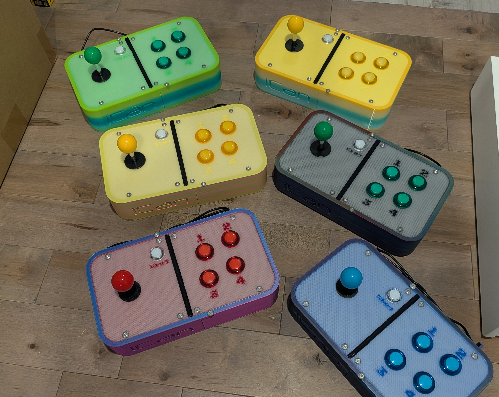
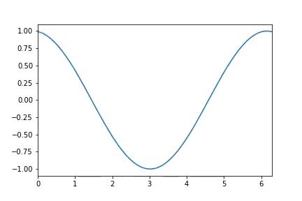

Below you'll find information about some of my past projects.

iCan Expo Web Application
Using Flutter, I designed and built a navigation app and digital project showcase for the iCan 2025 Expo. The app allowed parents to easily navigate the expo and vote for projects that stood out to them.
Flutter Web Development
Empirium with Greenfoot
Empirium is a game I developed in collaboration with a few classmates built entirely in the Greenfoot Java game engine. I was principally responsible for the game's core mechanics and gameplay, as well as the sound design and music. It was developed in my first semester of college, and was my first experience with Java.
Java, Game Development
Minecraft Addon for Education Edition
Using JavaScript and the Bedrock Scripting API, I learned how to develop addons for Minecraft Education Edition. I developed an addon as a teaching tool to aid students in understanding boolean algebra and logic gates.
JavaScript, Bedrock Scripting API
Custom Arcade Controllers
Using Sketchup, I designed, iterated on, 3D printed, and built several fully-functional custom arcade controllers.
Sketchup, 3D Printing, Electronics
Visualization of real and predicted electrical consumption in the province of Québec
As part of my first internship, I developed python features for an existing MVC framework that would pull data from a database based on dates provided, plot the data into a graph per time interval, and compile these graphs together to form an animated gif. The gif would allow consultants to visualize the data in a more intuitive way, and it would allow them to evaluate the efficacy of the ML model used for the prediction portion.
Python, MVC, Machine Learning
Destroy Daddy
Destroy Daddy is an original video game developed in Unity over the span of approximately 5-8 weeks. The game is oriented around space combat and exploration. The player is tasked with exploring the solar system, defeating enemies, and collecting resources to upgrade their ship. This is my largest project in the Unity Game engine, and it is developed entirely with free assets, and C# code.
Game Development, Unity, C#, Game Design
Arcade Launcher
The Arcade Launcher is a custom arcade-style game launcher that I developed in Python. The launcher enabled me to add all of the games my students developed into a single application. As part of the project, I made the launcher capable of automatically switching controller profiles based on the game selected, which ensured each game controlled properly with my custom controllers.
Python, Game Development, Custom Hardware
TecMon: Open-Source Game
TecMon is an open-source game developed in the Godot Game Engine. The game is a turn-based strategy game that I developed in collaboration with a few of my students as a summer education initiative. I was responsible for the overall game design, as well as the implementation of several core mechanics, and the management of the repository and the issues tracker. The game is still in development, and we are currently working on adding new features and content to the game.
Godot, Game Development, Open Source